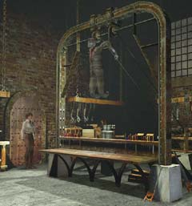
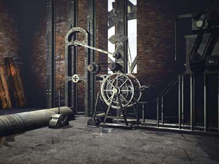
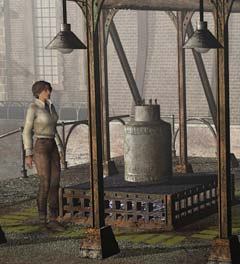
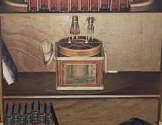

| 概要 | 地図 | |
| 淡いヒント集 | ヒント集 | 的確なヒント集 |
| 攻略最短ルート | Syberia 攻略へ |
| << 前の段階へ | 地域選択へ | 次の段階へ >> |
バラディレーン
|
カラクリ人形工場
カラクリ人形の工場に入ると、その広さにきっと驚くだろう(驚かなかったのならば、とりあえず驚いてください。)。これだけ広いと、様々な情報が一度に入ってしまい混乱しかねない。まずは、様々な機械や箱が置いてある工場を調べてみる必要がある。 ・オスカーとの接触 ・工場全体の電源の確保 ・カラクリ人形を作る機械へオイルの供給 ・オスカーの足の制作 ・アンナの書斎の調査 である。
オスカーの製作室
 ・ぶら下がっているカラクリ人形がオスカーである。 ・このままでは彼と会話ができない。おろす必要がある。 ・どうすればおろせるだろうか。
水車が見える部屋(動力)
 ・水車とは昔から動力として使われている。 ・操作できるものは、下に引くレバーと左右に動かすレバーがある。あとは、手順の問題である。 ・ここを動かすと、工場全体に何か変化が起きるはずである。
外にあるオイルタンク
 ・オイルは何に使うか? ・近くに操作できるレバーがあるはずだ。レバーを動かすとどうなるか。 ・タンクはどこへ運ばれるのか。工場の中を調べてみよう。
タンクを運ぶカラクリ人形
・この人形は、機械に取り付けるオイルタンクを運ぶものである(管理人はオイルだと確信している)。オイルがなければ、外へ行き探すべきだ。
工場の操作パネル
 ・右の6個のスイッチ、左の6個のメーターは下に見える機械を示している。 ・動力が伝わっているのならば、どれか一つは使える機械がある。スイッチを操作してみよう。 ・真ん中にパンチカードが差し込める。 ・左のレバーを押すと、スクリーンの模様が変化する。 ・右のレバーを押すと、足を作ってくれる。取りにいって、オスカーに渡そう。 ・根気よく一つずつ足を作り、オスカーに手渡すべきだ。近道はない。
アンナの書斎にある書棚
 ・どこかに隠しスイッチがありそうだ。
オルゴール
 ・隠しスイッチを押すと、オルゴールが出てくるだろう。 ・オルゴールといえば、シリンダーで動く。 ・あるアイテムを使うと、上の人形を持ち運ぶことができる。 |
| << 前の段階へ | 地域選択へ | 次の段階へ >> |
| 概要 | 地図 | |
| 淡いヒント集 | ヒント集 | 的確なヒント集 |
| 攻略最短ルート | Syberia 攻略へ |
Syberia
| 目次へ戻る | ページの上部へ |